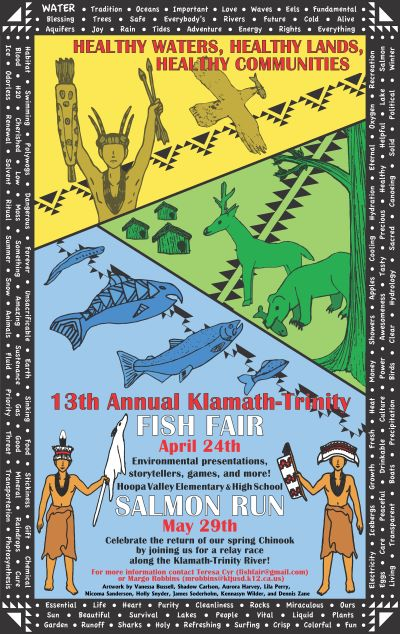

Portfolio
Welcome to my portfolio! Despite a lack of artistic talent and job positions that rarely necessitated the creation of dashing digital media, this personal portfolio page presents a few projects I've crafted over the years.
The "search results" below describe each project and display medium size images. Every image can be clicked to open an enlarged version and/or download the source file. Search results are sorted in reverse chronological order.
This Website
Let's start with the elephant in the room, this personal website! It is a mobile-first, responsive website built with accessibility in mind. It was made for the capstone project in the Web Design for Everybody Coursera Specialization taught by UC Michigan's Colleen van Lent. The HTML, CSS, and JS are coded from scratch, though I hope you can tell it is based upon a certain search engine.
Building 4300 Traverse
For our Introductory Land Survey course we traversed around Building 4300 at Cuesta College in San Luis Obispo, CA. Equipment included a Spectra FOCUS 35 total station, Trimble TSC3 controller, and prism pole. Direct reflectance shots were taken of the building walls. AutoCAD was used to draw building walls and output a layout. In other words, I drew a rectangle. At least it's a spatially accurate rectangle.
And heck, I did create an AutoCAD drawing template with documentation and CAD tips to share with classmates who weren't as familiar with AutoCAD. So that's something.

History and Mapping of the Ducktown Desert
For a century between the late 1800s and late 1900s a region in southeastern Tennessee was known as the "Ducktown Desert" despite receiving almost 60 inches of rain annually. Logging, grazing, sulfur dioxide emissions from copper mining, and erosion degraded an area of nearly 50 square miles. Thanks to generations of hard work by various government agencies and multiple mining companies, increased restoration science, and improved environmental policy, the Copper Basin once again looks like much of Appalachia—rounded mountain slopes are covered in a thick blanket of pines, broad leaf trees, and grasses.
This is what us raft guides learned when our company, Wildwater, took us on a field trip to the local Ducktown Basin Museum. It so happened that this field trip coincided with the need for a Geographic Information Systems (GIS) course project idea. The result? I mapped and calculated the area of denuded land (bare earth with no vegetation) over the years in the Copper Basin.
To view the full report made with Esri ArcGIS Pro and Online, click on the image below. It links to a "StoryMap" hosted by the cloud platform ArcGIS Online.
New Britain Land Cover Maps
Southeastern Asia holds one the largest tropical rainforests in the world. The island of New Guinea is at the heart of this ecologically critical area. Northeast of New Guinea lies an island named New Britain, which is roughly the size of Taiwan. New Britain has one of the highest deforestation rates in the region.
As a project for another GIS course I derived land cover types on New Britain using image classification in Esri ArcMap. The area of forested land in 1989 and 2015 was calculated and compared. These measurements are inaccurate because of partial cloud cover in satellite imagery. It turns out rainforests almost always have rain clouds and rain clouds are bad for satellite imagery.
13th Annual Klamath-Trinity Fish Fair Poster
Up in northern California there is an annual educational event called the Klamath-Trinity Fish Fair. Nearly 1,000 students from all over the area gather at Hoopa Elementary to learn, play, and celebrate the local watersheds. As Americorps Watershed Steward members, my site partner Brianna and I were responsible for the majority of the event planning. We also gathered art from the students and made a fun poster!
